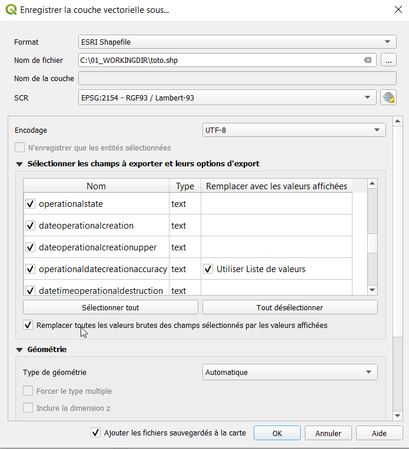

Export de données dans Lamia¶
Export à partir des couches qgis¶
Il est possible d’exporter directement les couches qgis. Pour cela, aller dans l’onglet couches et faire un click droit sur la couche voulue.
Dans le menu déroulant, choisir Exporter / Sauvegarder les entitées sous…
Renseigner la fenêtre, en faisant attention de cocher « Remplacer toutes les valeurs brutes des champs sélectionnés … »
Utilisation du module d’export¶
On accède à ce module allant dans « Interface / Post traitement » et en selectionnant l’onglet « Export shp ».
Ce module permet de configurer des exports spécifiques, associant plus tables entre elles.
Choisir le type d’export voulu, le fichier de destination et cliquer sur « exporter ».
Présentation / Fonctionnement¶
Ce module lit un fichier texte situé :
soit dans le répertoire du plugin Lamia (menu Préférences / Ouvrir le répertoire de Lamia) et ensuite dans le sous répertoire Lamia\worktypeconf\[type_de_base_de_données]\lamiaexportshp
soit dans le répertoire du projet (menu Préférences / Ouvrir le répertoire du projet) et ensuite dans le sous répertoire config\exportshp
Ce fichier contient les instructions pour réaliser l’export.
Configuration du fichier texte¶
Le fichier a la structure minimale suivante :
###Infralineaire
#nom type cst valeur
typeReseau; String; typeReseau ; Infralineaire_now.typeReseau
###geom
geom; Int; ; ST_AsText(Infralineaire_now.geom)
###main
FROM Infralineaire_now
###main
la partie ###main sert a executer la requete générale (la partie FROM de la requete SQL). Les tables demandées dans les parties avant doivent y figurer. On peut également réaliser des jointures dans cette requete :
ex: FROM Infralineaire_now LEFT JOIN Noeud_now AS Noeud_amont ON Infralineaire_now.lid_descriptionsystem_1 = Noeud_amont.id_descriptionsystem
###geom
La partie ###geom doit être déclarée commme dans l’exemple pour affectée une géométrie à la couche d’export.
###[Nom_de_table]
Enfin, les champs à exporter sont dans une partie ###[Nom de table] l’information comporte 4 parties séparées par des points virgules :
Le nom du champ dans la table finale;
Le type du champ (String, Int ou Double)
Le nom du champ Lamia lorsque le champ dispose d’une table de correspondance de valeur - le nom de table affecté à ###[nomde table] doit être juste pour que cela fonctionne;
Et enfin, une requete de type SELECT qui s’appliquera sur la partie ###Main vue ci-avant. C’est ici que l’on choisi le champ de la table Lamia.
# commentaire
LEs commentaires peuvent s’insérer avec une ligne commencant par “# “
Exemple complet¶
###Infralineaire
#nom type cst valeur
id_infralineaire; Int; ; id_infralineaire
lk_descriptionsystem1; Int; ; Infralineaire_now.lid_descriptionsystem_1
lk_descriptionsystem2; Int; ; lid_descriptionsystem_2
typeReseau; String; typeReseau ; Infralineaire_now.typeReseau
modeCirculation; String; modeCirculation ; modeCirculation
formecanalisation; String; formecanalisation ; formecanalisation
diametreNominal; Double; ; diametreNominal
hauteur; Double; ; hauteur
materiau; String; materiau ; materiau
branchement; String; ; CASE WHEN branchement = 0 THEN 'Principal' ELSE 'Branchement' END
###Descriptionsystem
id_descriptionsystem; Int; ; Infralineaire_now.id_descriptionsystem
annee_debut_pose; String; ; Infralineaire_now.annee_debut_pose
date_miseHorsService; String; ; Infralineaire_now.date_miseHorsService
###Objet
#nom type cst valeur
id_objet; Int; ; Infralineaire_now.id_objet
commentaire; String; ; Infralineaire_now.commentaire
datetimecreation; String; ; Infralineaire_now.datetimecreation
datetimemodification; String; ; Infralineaire_now.datetimemodification
###Infralineaire1
#nom type cst valeur
feamont; Double; ; CASE WHEN Infralineaire_now.profamont is NULL THEN (Noeud_amont.z - Noeud_amont.profradierouvrage) ELSE (Noeud_amont.z - Infralineaire_now.profamont) END
feaval; Double; ; CASE WHEN Infralineaire_now.profaval is NULL THEN (Noeud_aval.z - Noeud_aval.profradierouvrage) ELSE (Noeud_aval.z - Infralineaire_now.profaval) END
longueur;Double; ;ST_Length(Infralineaire_now.geom)
pentepc; Double; ;(( CASE WHEN Infralineaire_now.profamont is NULL THEN (Noeud_amont.z - Noeud_amont.profradierouvrage) ELSE (Noeud_amont.z - Infralineaire_now.profamont) END ) - CASE WHEN Infralineaire_now.profaval is NULL THEN (Noeud_aval.z - Noeud_aval.profradierouvrage) ELSE (Noeud_aval.z - Infralineaire_now.profaval) END ) / ST_Length(Infralineaire_now.geom) * 100
###geom
geom; Int; ; ST_AsText(Infralineaire_now.geom)
###main
FROM Infralineaire_now LEFT JOIN Noeud_now AS Noeud_amont ON Infralineaire_now.lid_descriptionsystem_1 = Noeud_amont.id_descriptionsystem LEFT JOIN Noeud_now AS Noeud_aval ON Infralineaire_now.lid_descriptionsystem_2 = Noeud_aval.id_descriptionsystem

{kind=link}